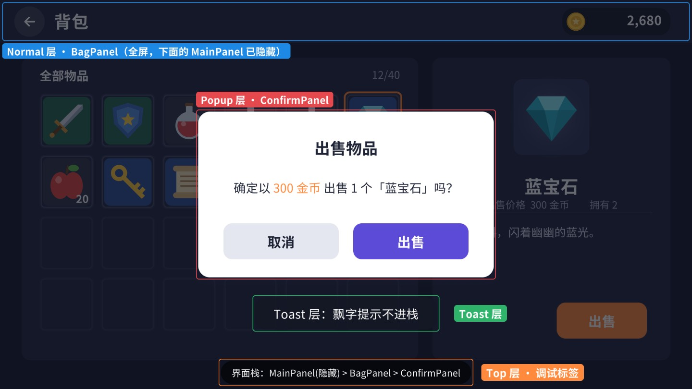
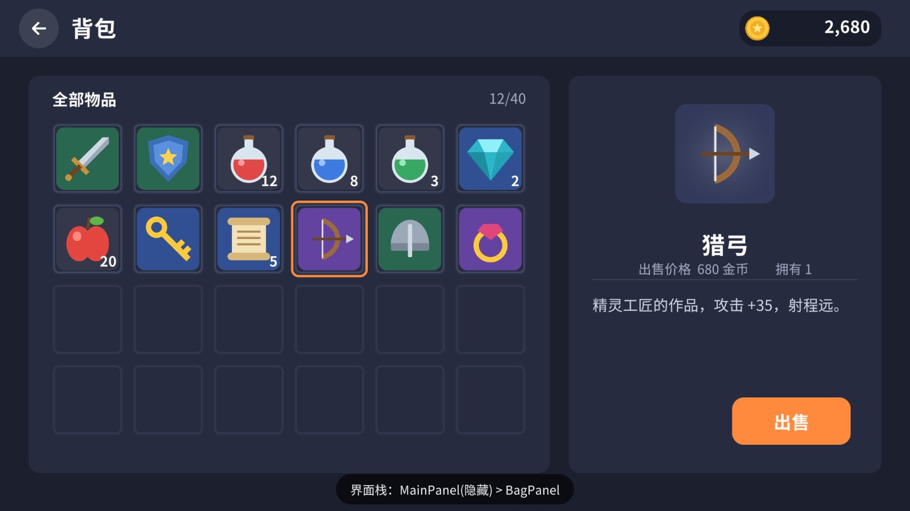
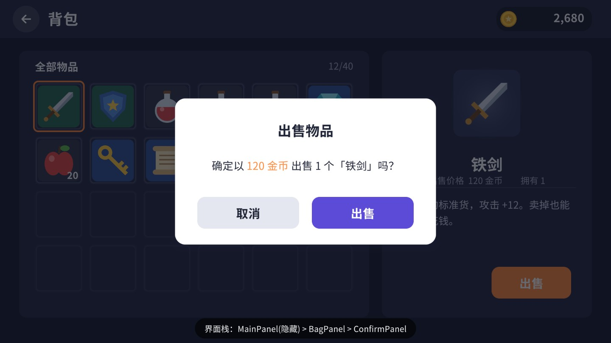
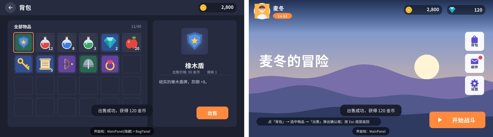

前面十五章做的都是“一个界面”。真实项目里有几十上百个界面：主界面、背包、商城、邮件、设置、各种确认框和奖励弹窗，它们要按层级叠放、按返回键逐层关闭、按需加载、用完回收，还要互相通信。这一章从零写一个小而完整的 UI 框架，最后用它走通“主界面 → 背包 → 确认框 → 返回”的全流程。代码可以直接拷进你的项目。
先看一个没有框架的项目通常会长成什么样。策划要一个背包：程序在场景里放一个 BagPanel，默认隐藏，主界面的按钮 OnClick 里 bagPanel.SetActive(true)。接着要一个出售确认框，于是背包脚本里再引用一个 ConfirmPanel。再后来商城、邮件、活动也要用确认框，每个脚本都拖一个引用；有的界面需要盖在别的界面之上，于是开始手动调 SetAsLastSibling；Android 上按返回键要关掉最上面的界面，于是每个界面的 Update 里都检查一遍 Escape，结果一按返回，三个界面同时关掉了。
三个月后，主场景里堆着几十个默认隐藏的界面，启动时全部加载、全部 Awake，内存和启动时间都上去了；界面之间的引用像蜘蛛网，改一个界面要动五个脚本；有人在 OnEnable 里订阅了事件却忘了退订，关掉的界面还在后台刷新，偶尔报空引用。这些问题都不是 UGUI 本身的问题，而是缺少一个统一管理界面的地方。
UI 框架要解决的事情可以归纳成下面几条，本章逐条实现：
| 问题 | 框架的做法 | 本章对应 |
|---|---|---|
| 界面谁盖谁说不清 | 固定的层级（Layer），每层一个子 Canvas | 案例 16.1 |
| 返回键关错界面 | 界面栈：返回键只交给栈顶界面 | 案例 16.3 |
| 初始化、刷新、清理的代码散落各处 | 统一的生命周期回调 | 案例 16.2 |
| 所有界面常驻场景，启动慢、占内存 | 按需从预制体加载，关闭后按策略缓存或销毁 | 16.4、案例 16.4 |
| 到处拖确认框、提示框的引用 | 一行代码弹确认框、Toast，弹窗排队 | 案例 16.5、16.6 |
| 界面之间、界面和玩法之间互相引用 | 数据绑定 + 事件中心解耦 | 案例 16.7 |
每个界面手写一堆 transform.Find | 按命名规则自动生成绑定代码 | 案例 16.8 |
还有一点需要提前说明：框架并不替代前面学过的任何东西。界面内部怎么布局、按钮怎么做反馈、列表怎么滚动，仍然是第 2～15 章的内容；框架只负责界面“之间”的事情。也正因为如此，框架的代码应该非常稳定——一旦写好，几乎不需要随着业务改动。如果你发现每加一个新界面都要去改 UIManager，说明某些本该由界面自己决定的逻辑被错误地放进了框架。本章在设计每个接口时，都会顺带说明“为什么放在这里而不是那里”，读者可以据此判断哪些部分适合按自己的项目修改。
整个框架的结构如图 16-1。UIManager 挂在场景里唯一的根画布 UIRoot 上，它下面按层级建六个子节点；每个界面是一个预制体，根节点挂一个继承自 UIPanel 的脚本。业务代码只和 UIManager 打交道：Open<BagPanel>()、Close(panel)、Back()。
配套工程里的文件分两组。Ch16/Framework/ 是可以原样拷走的框架本体；Ch16/Demo/ 是示例界面和数据，演示框架怎么用：
目标：确定界面谁盖谁，与界面打开的先后顺序无关。新手引导的遮罩永远在普通界面之上，断线重连的转圈永远在最上面。
UGUI 同一个 Canvas 里按层级顺序绘制，后面的盖住前面的（第 1 章）。如果所有界面都直接挂在一个 Canvas 下，“谁在上面”就取决于谁最后 SetAsLastSibling，一旦某个界面在弹窗打开之后才刷新、顺手调了一下兄弟顺序，就会跑到弹窗上面去。解决办法是把界面分成固定的几层：
每一层是 UIRoot 下的一个子节点，上面挂 Canvas 并勾选 overrideSorting，sortingOrder 按层号乘 100。这样做有三个好处：第一，层与层之间的先后由 sortingOrder 决定，和层级面板里的顺序无关；第二，子 Canvas 是独立的重建单元（第 12 章讲过，Canvas 内任何元素变化会导致整个 Canvas 重新合批），Toast 每帧淡出不会连累背包重新合批；第三，界面里需要夹粒子特效时（第 19 章），可以在 100 的间隔里插入粒子的排序值。
注意代码里给每层都加了 GraphicRaycaster。这是一个经常被忽略的坑：GraphicRaycaster 只检测“自己所在 Canvas”上的图形。在源码 GraphicRaycaster.Raycast 里，它通过 GraphicRegistry.GetRaycastableGraphicsForCanvas(canvas) 取图形列表，而子 Canvas 下的 Image 是登记在子 Canvas 名下的。根 Canvas 上的 Raycaster 看不到它们，于是界面能显示却点不动。
// 摘自 com.unity.ugui 1.0.0 Runtime/UI/Core/GraphicRaycaster.cs（Raycast 方法内）
var canvasGraphics = GraphicRegistry.GetRaycastableGraphicsForCanvas(canvas);
if (canvasGraphics == null || canvasGraphics.Count == 0)
return;
下面这张图是同时打开主界面、背包、确认框和 Toast 时的样子，每个框标出了它所在的层；层级图显示了 UIRoot 下的结构，注意 MainPanel 名字前的灰色：它被全屏的背包挡住，已经被框架隐藏了（16.3 节解释）。

HUD 层（战斗界面）放在 Normal 之下，有的会把 Guide 拆成“引导遮罩”和“引导手指”两层。原则是：层只按“必须永远盖住谁”来划分，同一层里的先后交给界面栈。目标：所有界面有统一的“出生到死亡”流程，初始化、刷新、清理各有固定的位置，框架决定调用时机。
很多人习惯在界面脚本的 Awake、OnEnable 里写初始化。问题在于这些回调由 Unity 在“物体被激活”时调用，而框架有时需要激活一个界面却不希望它刷新（比如从全屏遮挡中恢复显示），有时又需要在不激活的情况下处理它（比如缓存、销毁）。把生命周期完全交给框架驱动，语义就清楚了：
逐个说明各回调里该写什么：
AddListener、设置静态文字、隐藏模板节点。不要在这里读业务数据，因为缓存的界面下次打开不会再走 OnCreate，数据会是旧的。
OnOpen(args)每次打开都执行：读数据、刷新显示、绑定数据、订阅事件。args 是 Open 时传入的参数，比如要选中的物品。
OnPause / OnResume失去 / 重新获得栈顶位置。典型用途：暂停 / 恢复界面上的倒计时、背景音乐切换、引导检查。
OnClose停止计时器、动画。OnOpen 里通过 AddToOpenScope 登记的绑定会在 OnClose 之后被统一 Dispose，不用手动退订。
OnRelease界面实例被真正销毁前调用，释放界面自己额外加载的资源（大图、特效）。
m_OpenScope 是这个基类最有价值的设计。“订阅了忘记退订”是 UI 代码里最常见的内存泄漏和空引用来源：界面关了，事件还挂在全局的事件中心上，下次事件触发时去刷新一个已经隐藏甚至已经销毁的界面。把所有订阅都登记到“打开期间有效”的作用域里，关闭时统一释放，这类问题就从根上消失了。Listen<T>() 是对事件中心的封装，一行代码完成“订阅 + 登记”。
Open（比如从两个入口进入背包），框架会再调用一次 OnOpen 来刷新参数。如果 OnOpen 里订阅了事件，第二次就会重复订阅。基类在 InternalOpen 开头判断 IsOpen，先释放上一次的作用域，避免了这个问题。目标：Normal 和 Popup 层的界面组成一个栈，返回键只交给栈顶；全屏界面打开时，被它完全挡住的界面自动隐藏。
先看 UIManager 持有的几张表：
m_Opened 记录所有打开中的界面（按名字查找），m_Stack 只记录进栈层的界面，末尾是栈顶。为什么 Toast、Guide、Top 层不进栈？因为返回键的语义是“关掉用户正在操作的那个界面”，而 Toast 只是提示、引导遮罩不该被返回键关掉、断线转圈更不该。
打开分三步：取实例（常驻表、缓存、或者新加载）→ 挂到对应层并放到层内最上面 → 压栈、调用 OnOpen。压栈之前先让原来的栈顶 OnPause。如果要打开的界面已经在栈里（比如背包 → 商城 → 点商城里的“去背包”），框架会关掉它上面的所有界面让它回到栈顶，这和 Android 的 singleTask 启动模式一样，避免栈里出现两个背包。
OpenAsync 是异步版本，适合首次打开很大的界面：加载期间可以在 Top 层显示转圈，加载完再显示。m_Loading 防止加载期间玩家狂点按钮导致同一个界面被加载、实例化多次——这是实际项目里很容易出的 bug。
RefreshVisibility 是一个简单但收益很大的优化：从栈顶往下数，遇到第一个全屏界面（FullScreen 勾选的界面），它下面的所有界面都看不见了，直接 SetActive(false)。被挡住的界面不渲染、不参与射线检测，Canvas 合批的元素也少了。背包是全屏的，所以打开背包后主界面被隐藏；确认框不是全屏的（半透明遮罩下还要看到背包），背包保持显示。
为什么用 SetActive 而不是把 CanvasGroup 的 alpha 设为 0？alpha 为 0 的元素仍然在 Canvas 的合批数据里，仍然要计算网格，只是画出来看不见；SetActive(false) 则彻底把它们移出渲染和事件。代价是重新激活时 Graphic 会在 OnEnable 里标脏、重建一次（第 12 章），对于“关闭背包回到主界面”这种低频操作完全可以接受。第 20 章有各种隐藏方式的实测对比。
Back 本身只有一行：交给栈顶界面的 OnBack。默认实现是关闭自己；需要特殊处理的界面重写它。主界面在栈底，按返回键不能把自己关了，而是弹出“确定退出游戏吗”；确认框把返回键当作“取消”；正在播放不可跳过的剧情动画时返回 false，表示不处理。这样“返回键怎么办”分散到每个界面自己决定，UIManager 不需要写任何特殊判断。
在 Unity 里，Android 的物理返回键和桌面的 Esc 都映射为 KeyCode.Escape，UIManager 在 Update 里统一监听一次。这就避免了“每个界面各自监听 Escape，一按关三个”的问题。

框架约定：界面名 = 类名 = 预制体文件名。Open<BagPanel>() 用 typeof(BagPanel).Name 作为 key，交给加载器去找预制体。加载器是一个接口：
配套工程用 Resources 实现：预制体放在 Ch16/Resources/UIPanels/ 下。Resources 的优点是零配置、同步加载简单，缺点也很明显：所有 Resources 目录里的资源都会被打进包体，不管用没用到；启动时 Unity 要为 Resources 建索引，资源越多启动越慢；而且无法热更新。Unity 官方文档也不推荐在正式项目里大量使用 Resources。
正式项目通常换成 Addressables（或自己管理的 AssetBundle）。因为加载逻辑都封装在 IUIAssetLoader 后面，切换只需要写一个新的实现类，UIManager 一行都不用改。下面是 Addressables 版本的思路（配套工程没有安装 Addressables 包，这段代码未在工程里编译，API 以你安装的包版本为准）：
// 需要安装 com.unity.addressables；预制体的 Address 设为界面名
public class AddressablesUILoader : IUIAssetLoader
{
readonly Dictionary<string, AsyncOperationHandle<GameObject>> m_Handles = new();
public GameObject Load(string key)
{
var h = Addressables.LoadAssetAsync<GameObject>(key);
h.WaitForCompletion(); // 同步等待：首次打开会卡一下，大界面请用 LoadAsync
m_Handles[key] = h;
return h.Result;
}
public void LoadAsync(string key, Action<GameObject> done)
{
var h = Addressables.LoadAssetAsync<GameObject>(key);
h.Completed += op => { m_Handles[key] = op; done(op.Result); };
}
public void Release(string key)
{
// Addressables 有引用计数：实例销毁后释放句柄，预制体和它依赖的图集才会被卸载
if (m_Handles.Remove(key, out var h)) Addressables.Release(h);
}
}
同步加载写起来最简单：Open 返回时界面已经显示，调用方可以立刻拿到实例做后续设置。代价是首次打开大界面时，加载预制体、解压图集、实例化几百个节点都挤在同一帧里，玩家会感到明显的卡顿。异步加载把读盘和解压分摊到后台线程与后续几帧，但界面不会立刻出现，调用方要改成回调写法，还要处理“加载过程中玩家又点了别的按钮”“加载回来时 UIManager 已经被销毁”等情况——OpenAsync 里的 m_Loading 与 this == null 判断就是为此准备的。实践中常见的折中是：小界面同步、大界面异步，并在进入主城时用异步预加载几个常用的大界面放进缓存。
对象池适合“同一种东西大量、反复地创建销毁”，比如伤害飘字、子弹、列表项（第 17、18 章）。界面不一样：每种界面通常只有一个实例，问题不是“创建很多个”，而是“要不要把这一个留在内存里”。LRU 的思路是假设最近用过的界面最可能马上再用，在固定的内存预算（容量）内保留它们，超出预算时淘汰最久没用的那个。容量是一个可以根据机型调整的参数：高端机可以缓存 8 个，低端机缓存 2 个。
注意 Release 的调用时机：UIManager 只在界面实例被销毁时调用它，缓存中的界面仍持有预制体。这正是下一节缓存策略要权衡的东西。
目标：常用界面关了再开不卡，偶尔打开的大界面用完就释放，内存可控。
每个界面在预制体上选择三种缓存模式之一（UICacheMode）：
| 模式 | 关闭后 | 适合 | 示例 |
|---|---|---|---|
| Permanent | 隐藏，永不销毁 | 随时要用、打开频繁 | 主界面、确认框、Toast |
| Cache | 放进 LRU 缓存，超出容量销毁最久没用的 | 常用但不必常驻 | 背包、角色、奖励弹窗 |
| DestroyOnClose | 立即销毁、释放预制体 | 低频且占内存大 | 活动页、排行榜、抽卡 |
LRU（Least Recently Used，最近最少使用）的实现用了一个链表：关闭的界面插到表头，再次打开时从链表里摘出来，超过容量时从表尾淘汰。容量默认 4，可以在 UIManager 的 Inspector 里调。查找用的是线性遍历——缓存里最多几个界面，遍历比维护一个额外的字典更简单，也不会更慢。
缓存策略没有标准答案，要结合实测（第 20 章介绍 Memory Profiler）。几条经验：
Application.lowMemory 事件调用 ClearCache()，再 Resources.UnloadUnusedAssets()。CloseAll() 和 ClearCache()，战斗里用不到主城的界面。目标：任何地方一行代码弹确认框，按钮回调用闭包写在调用处；一行代码飘一条提示。
UIManager.Confirm("确定以 120 金币出售「铁剑」吗？", () => model.Sell(item), title: "出售物品", okText: "出售");
UIManager.Toast("出售成功，获得 120 金币");
确认框是一个 Popup 层、常驻的界面，参数通过 ConfirmArgs 传入：
Finish 里有两个细节。第一，先把 m_Args 置空再处理，防止玩家在同一帧双击“确定”导致回调执行两次（比如扣两次钱）。第二，先关闭确认框，再调用回调：如果回调里又弹了一个确认框（“出售成功，是否继续出售？”），由于确认框是同一个实例，先关后开才不会冲突。
确认框的卡片上挂了 UIPopIn，每次激活时播放一个回弹缩放（EaseOutBack）：
动画放在卡片节点上而不是界面根节点上，是为了让半透明遮罩立刻出现、只有卡片在弹。第 15 章有更完整的补间系统，这里只用最小的实现，避免框架依赖动画库。

Toast 在 Toast 层、常驻、不进栈，同时最多显示 3 条，新的在下、旧的往上顶，到时间后淡出回收。它用的是 Time.unscaledDeltaTime：游戏暂停（timeScale = 0）时提示也能正常消失。根节点的 CanvasGroup 关掉了 blocksRaycasts，提示不会挡住下面的按钮。

目标：登录时“签到奖励”“首充礼包”“系统公告”接连要弹，不能叠在一起，要一个关了再弹下一个，并且重要的先弹。
如果直接连调三次 Open，三个弹窗会同时出现在 Popup 层叠成一摞；如果三个都是同一个 RewardPanel，后两次 Open 会覆盖第一次的参数。正确做法是排队：
入队时立即尝试弹出；只要栈顶还是 Popup 层的界面，就继续等。每当有界面关闭，Close 末尾会调用 TryShowQueuedPopup，于是队列自然向前推进。出队按优先级从高到低，同优先级按入队顺序（Order）先进先出。这里用列表线性找最大值而不是优先队列，原因同样是数量少、代码简单；队列里同时排几十个弹窗本身就是设计问题。
主界面的“邮件”按钮演示了这个过程：依次入队签到（优先级 0）、公告（0）、首充（10）。签到入队时没有弹窗，立即弹出；公告和首充排队；关掉签到后，首充优先级高，插到公告前面。
RewardPanel 底部的“后面还有 N 个弹窗排队”有一个细节：签到弹窗打开的那一刻，另外两个还没入队，如果只在 OnOpen 里读一次 QueuedCount 会显示“这是最后一个”。所以它订阅了 QueueChanged 事件，并且把订阅登记进 OpenScope，关闭时自动退订：
QueuedPopup 加一个 Func<bool> condition，出队时检查条件不满足就丢弃。目标：金币变了，主界面、背包标题栏上的金币数自动刷新；卖掉物品后弹出提示，但背包脚本不需要知道“谁来弹提示”。
界面刷新最原始的写法是“改完数据手动调 Refresh”。问题是改数据的地方很多（出售、领奖、充值、GM 命令），漏调一处界面就不同步。把数据包成可观察属性，值一变就通知所有绑定者：
Bind 返回一个 IDisposable，界面在 OnOpen 里绑定、登记到 OpenScope，关闭时自动解绑。invokeNow 默认为 true，绑定时立刻用当前值刷一次，省掉一段初始化代码。再配几个扩展方法，常见的“文字跟着数字变”“物体跟着布尔值显隐”都变成一行：
数据层（Model）里只放数据和修改数据的方法，不引用任何界面：
这就是 MVP / MVVM 思想的最小落地：Model 是 PlayerModel，View 是预制体上的控件，界面脚本（Presenter）负责把两者绑起来、把用户操作转成对 Model 的调用。不必追求教科书式的分层——对于 UGUI 项目，“界面脚本不存真数据、数据变了自动刷新”这两条做到了，就已经解决了大部分同步问题。
Observable<T> 的 setter 用 EqualityComparer 判断值是否变化。如果 T 是引用类型（比如一个 List），修改列表内容不会触发通知，因为引用没变。这种情况要么改完调 Notify()，要么像 Inventory 那样自己提供 Changed 事件。“卖掉物品后弹提示”这件事，背包可以直接调 UIManager.Toast，但更多时候一个事件有多个接收者：任务系统要统计出售次数、成就系统要检查“累计出售 100 件”、音效系统要播放金币声。让背包去调用它们，背包就和所有系统耦合在一起。事件中心把“发生了什么”和“谁关心”分开：
这个实现有三个特点。第一，类型安全：事件是一个 struct（ItemSoldEvent），订阅和发送都用泛型，参数写错编译期就报错，不像字符串事件名那样拼错了运行时才发现。第二，没有字典查找：泛型静态类 Channel<T> 对每个 T 都有独立的静态字段，相当于编译器帮你生成了一张“类型 → 委托”的表。第三，异常隔离：逐个调用监听者并 catch 异常，一个监听者出错不会让后面的都收不到。
示例里出售的流程是：BagPanel 调 PlayerModel.Sell → Model 改金币、发 ItemSoldEvent → 启动脚本里的全局监听弹 Toast。背包不知道 Toast 的存在，Toast 也不知道背包的存在：
Clear<T>()，并且所有订阅都应该通过 IDisposable 正确释放。配套工程的批处理出图也遇到了同样的问题——多张图在同一个进程里搭景，每张图开始前都要清一下订阅。目标：美术在预制体里把需要代码访问的节点按约定命名（btn_Sell、txt_Gold），右键一下就生成取控件的代码，界面脚本里不再出现手写的 transform.Find。
手写控件引用有两种方式，各有毛病。一种是 [SerializeField] 字段在 Inspector 里拖引用：界面一复杂就要拖几十次，预制体改结构时引用丢了也没有任何提示。另一种是在代码里 transform.Find("DetailCard/go_Detail/btn_Sell")：路径写错只有运行到那一行才报错，改了层级要全局搜索路径字符串。代码生成把两者的优点结合起来：命名即声明，生成的代码有完整的类型，界面脚本像访问普通字段一样使用控件。
命名规则如下（可以按团队习惯修改 Rules 数组）：
以背包为例，预制体里带前缀的节点会生成字段，不带前缀的（Bg、Title、SlotBackground……）被忽略：
生成器递归遍历预制体，收集名字带前缀的节点，检查三类错误：名字重复（会生成两个同名字段）、名字不是合法的 C# 标识符、前缀与组件不符（叫 btn_ 却没有 Button）。遇到挂着另一个 UIPanel 的子节点时停止深入——嵌套的子面板由它自己的绑定代码负责：
生成的代码是界面类的另一半 partial class，重写基类的 BindUI。这就是为什么所有示例界面都声明为 partial：手写逻辑在 BagPanel.cs，生成代码在 Generated/BagPanel.Bind.cs，重新生成时只覆盖后者，手写部分永远不会被冲掉。
写文件时先和旧内容比较，没变化就不写，避免每次生成都触发 Unity 重新编译：
使用方法：
partial）。Assets/ 下，所以出现在 Project 窗口的右键菜单和顶部 Assets 菜单里）。btn_Sell、txt_Gold 等字段。运行时的 Bind<T> 在找不到节点时输出带路径的错误，而不是在后面某行抛出莫名其妙的空引用——预制体被人改了结构、却忘了重新生成时，这条日志能直接告诉你是哪个节点。配套工程的搭景代码在每次保存预制体后自动调用生成器，所以预制体和绑定代码永远一致；你的项目也可以写一个 AssetPostprocessor，在 UI 预制体保存时自动生成。
目标：把前面所有部件组装起来，在配套场景里完整走一遍。
场景里只有三样东西：相机、挂着 UIManager 的 UIRoot（六个层节点已建好）、挂着 Ch16Bootstrap 的启动物体。所有界面都不在场景里，运行后才从 Resources/UIPanels/ 加载。操作流程：
Open<MainPanel>()。底部标签显示 界面栈：MainPanel。背包界面的完整代码如下，注意它没有任何一行在找控件，也没有一行在“记得刷新金币”：
格子数量少时，这种“按需补足、多余隐藏”的做法足够了；背包上百格时请换成第 18 章的循环网格。
UIManager.Instance.Back()。把案例 16.9 的操作过程画成界面栈的变化，能更直观地看清各个回调的触发时机。图 16-9 从左到右是五个时刻，每一列从下往上是栈底到栈顶，灰色表示被全屏界面挡住而隐藏的界面：
有两个值得注意的地方。第 ③ 步打开确认框时，背包收到 OnPause 但没有被隐藏，因为确认框不是全屏界面，它的半透明遮罩下仍要看到背包；而第 ② 步打开全屏的背包时，主界面既收到 OnPause 又被隐藏。“失去焦点”和“不可见”是两件独立的事，框架用两套机制分别处理：焦点由栈顶位置决定（OnPause/OnResume），可见性由 RefreshVisibility 根据全屏标记决定。第 ⑤ 步背包关闭后进入缓存，主界面先恢复显示、再收到 OnResume，顺序反过来的话，主界面在 OnResume 里读取控件尺寸会拿到隐藏状态下的旧值。
框架对预制体只有很少的要求，但团队最好写成规范并用工具检查（第 21 章有预制体规范检查工具）：根节点四边拉伸铺满父节点、挂一个 UIPanel 子类和 CanvasGroup；全屏界面在根下第一个子节点放一张能接收射线的底图，否则点击会穿透到被隐藏前的下层界面（在全屏遮挡生效前的那一帧尤其明显）；弹窗必须带全屏遮罩，遮罩的 Raycast Target 保持开启；所有需要代码访问的节点按前缀命名，不需要访问的节点不要带前缀，以免生成一堆无用字段。
打开界面时用 Open<T>(args) 传参，参数建议定义成一个小类（如 ConfirmArgs），而不是传一堆 object 再强转。需要“返回结果”的界面（选择一个英雄、输入一个名字），在参数类里放一个回调 Action<TResult>，界面在确认时先关闭自己再调用回调，和确认框的写法一致。不要让被打开的界面反过来引用打开它的界面——那会重新织起蜘蛛网。
界面有打开、关闭动画时，动画播放期间玩家可能连点按钮，导致同一个界面被打开两次或在关闭动画中途又被操作。常见做法是在 Top 层放一张全屏透明的 Image 作为“输入屏蔽层”，动画开始时显示、结束时隐藏；或者在动画期间把整个 UIRoot 的 CanvasGroup.interactable 设为 false。返回键也要检查同一个标记。
如果 UI 要跨场景存在，把 UIRoot 放进一个永不卸载的启动场景，或者对它调用 DontDestroyOnLoad。切换场景前调用 CloseAll()，让每个界面正常走完 OnClose、释放订阅；否则场景里的对象被销毁后，常驻界面上残留的引用会变成“已销毁的对象”。反过来，如果每个场景都有自己的 UIRoot，注意 UIManager.Instance 会被新场景的实例接管，旧实例在 OnDestroy 里清空了自己的引用。
本章是每层一个子 Canvas。有些项目会给每个界面的根节点也加 Canvas，好处是界面内部的变化只重建它自己，坏处是每多一个 Canvas 就多至少一个合批批次（不同 Canvas 之间不能合批）。经验做法是：静态为主的界面不单独加；内部有持续动画或频繁刷新的部分（倒计时、滚动列表）单独放一个子 Canvas，做到“动静分离”。具体的测量方法见第 20 章。
引导系统通常需要：找到某个界面里的某个按钮、在 Guide 层画一个挖洞遮罩、只让那个按钮可点（第 14 章的镂空遮罩 + 事件穿透）。有了框架，“找到按钮”可以通过 UIManager.PanelOpened 事件得知界面何时打开，再用生成的字段名或节点路径定位；引导期间可以让 Back() 直接返回 false，防止玩家用返回键跳出引导。
AddToOpenScope(...) 或 Listen<T>()，并检查 C# 事件（如 Inventory.Changed）是否在关闭时退订。
弹窗队列卡住不往下弹队列只在“有界面关闭”时推进。如果某个弹窗是用 SetActive(false) 直接隐藏的、没有走 UIManager.Close，框架不知道它关了，栈顶一直是它。界面一律用 Close() 关闭。
Open 返回 nullConsole 会输出“找不到界面预制体”和完整路径。检查预制体是否在某个 Resources/UIPanels/ 目录下、文件名是否与类名完全一致（大小写敏感），根节点是否挂了 UIPanel 子类。
生成的绑定代码编译报“类型已定义”界面类没有声明 partial。生成的是 public partial class Xxx，手写的那一半也必须是 partial，且命名空间一致。
最后再强调一次框架的边界：它管理的是“界面”这一级的生命周期与组织方式，不应该知道任何具体业务。当你发现想在 UIManager 里写 if (panel is BagPanel) 时，说明这段逻辑应该放回 BagPanel 自己的回调里，或者通过事件中心通知出去。保持框架小而通用，它才能在项目的整个生命周期里一直被大家读懂、信任和使用。
OpenAsync 的转圈提示：加载超过 0.2 秒时在 Top 层显示 Loading，加载完隐藏。PlayOpenAnimation / PlayCloseAnimation 两个虚方法，关闭动画播完再真正 SetActive(false)。想一想：关闭动画期间玩家又按了返回键，应该怎么处理？Resources/UIPanels/ 下的预制体被保存时自动调用 UIBindGenerator。